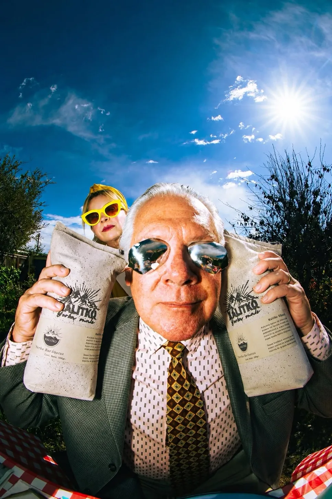
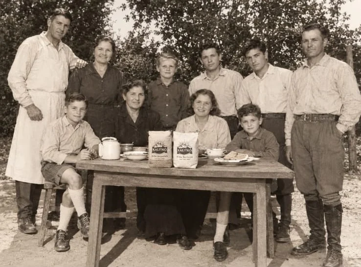
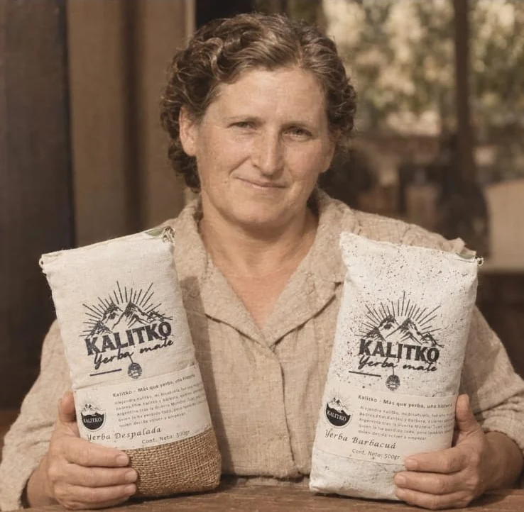
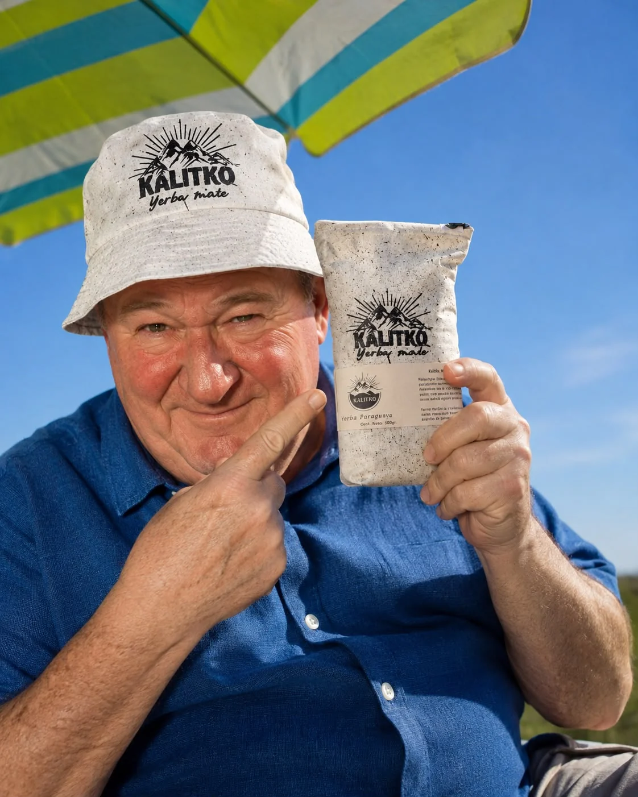
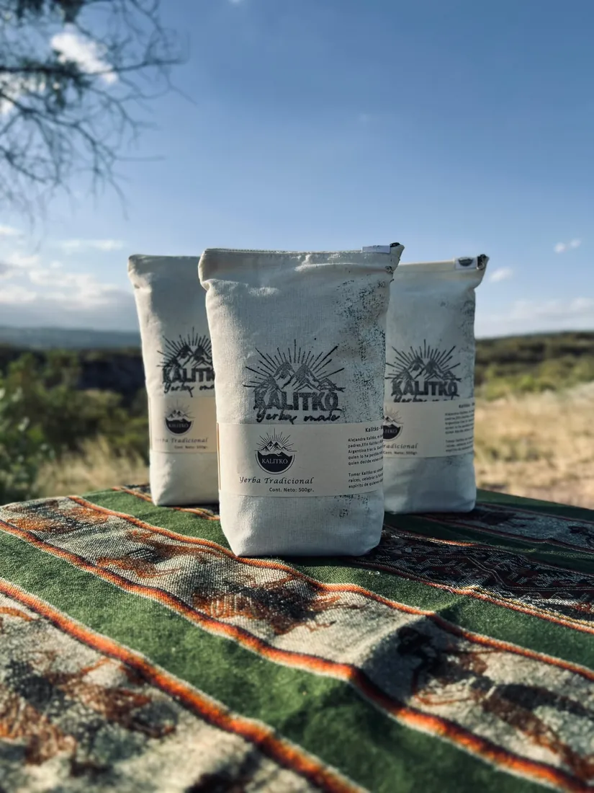

Kalitkó · Industria mendocina
Lo de
siempre.
Pero distinto.
Yerba mate, hierbas y blends. Una historia familiar que hoy se comparte a nuestra manera.
CAMPAÑA KALITKÓ · IMAGEN DE LA MARCA
Yerbas y hierbas · Kalitkó
Elegí el próximo.
Un poco de cada mundo: hierbas para acompañar el mate y variedades de yerba para encontrar tu favorita. Fotos reales de Kalitkó.
Nuestra historia · Kalitkó
DE LEJOS.Hasta acá.
Antes de llegar a tu mate, esta historia viajó desde Ucrania hasta Argentina.
Una familia. Un nuevo comienzo. Un legado.Hay historias que no empiezan con un producto. Empiezan con una familia y el coraje de volver a empezar.
-
01 / 04
Las raíces
UCRANIA.
La historia comienza con Alejandra Kalitko y su familia. Un origen que todavía vive en el nombre de la marca.

Una historia de familia · Imagen de campaña facilitada por Kalitkó -
02 / 04
Después de la Segunda Guerra Mundial
VOLVER A EMPEZAR.
Alejandra emigró desde Ucrania hacia Argentina junto a sus padres. Habían perdido todo; decidieron construir un nuevo comienzo.
-
03 / 04
Generación tras generación
LO QUE QUEDA.
De generación en generación heredamos más que un nombre: heredamos el valor de trabajar, la fuerza para comenzar de nuevo y la certeza de que, cuando creemos en nuestras capacidades, podemos construir el futuro que soñamos.

El legado que inspira a la marca · Imagen de campaña facilitada por Kalitkó -
04 / 04
Hoy · Desde Mendoza
ESTO ES KALITKÓ.
La marca nace de ese recorrido familiar. Hoy comparte su historia en cada cebada, a través de sus yerbas, hierbas y blends.

Kalitkó hoy · Imagen de campaña y producto
Las mejores historias no solo se cuentan. También se comparten alrededor de un mate.
Para compartir más
Llevás más. Pagás por mayor.
Un mismo carrito para todos. En esta demo, cuando sumás 12 kg de yerba elegible, los paquetes pasan a su precio por volumen. El progreso se ve en Mi bolsa, sin elegir otra modalidad de compra.
Mínimo informado: 12 kg. Combinación de variedades y tratamiento mayorista de hierbas y blends: pendiente de confirmar con Kalitkó.
Volver a los productos